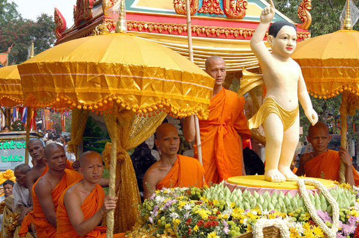
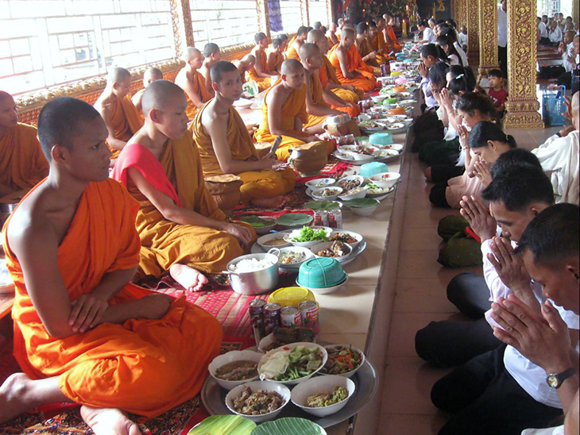

បុណ្យសាសនាខ្មែរ
ពិធីបុណ្យបំបួសនាគ

ពិធីបុណ្យបំបួស ដែលហៅថា” បួស ” នេះ មានន័យថាចូលកាន់ភេទជាសមណៈតាមច្បាប់សាសនា រឺតាមលទ្ធិណាមួយដូចជា បួសជាសាមណេរ, ភិក្ខុ រឺបួសជាតាបស។ នៅសតវត្សទី ២០ មានពិធីបំបួស លោកសាមណេរជាច្រើនប្រភេទ ដែលគេបានអនុវត្តនៅក្នុងប្រទេសកម្ពុជា រួមទាំងការចូលបួសដើម្បីបំពេញការសន្យារបស់ខ្លួន ហៅថា បួសសងគុណ, បួសមុខភ្លើង ដែលនៅក្នុង ការបួសនេះក្មេងប្រុសម្នាក់ស្លៀកស្បង់ចីវរមួយរយៈខ្លី ដោយសារតែមានសាច់ញាតិជិតដិត របស់ ខ្លួនស្លាប់។ យើងអាចហៅការបួសនេះថា បួសមួយសំកាំងដំរី។ រួមមានបួសចំណង់ចង់សិក្សានូវព្រះធម៌ និងបន្តការសិក្សារឺព្យាយាមគេចចេញពីការញៀនស្រា និងថ្នាំរហូតដល់មានសុភាសិតប្រជាប្រិយមួយបាននិយាថា អ្នក ខ្លះចូលបួសជាព្រះសង្ឃ “ គ្រាន់តែធើ្វលែងមានសត្វចៃនៅលើក្បាលតែប៉ុណ្ណោះ...អានបន្ត
ពិធីបុណ្យកឋិនទាន

កឋិនទានគឺជាបុណ្យមួយមានតែក្នុងព្រះពុទ្ធសាសនាតែប៉ុណ្ណោះជាទានមានមកតាមផ្លូវ ព្រះវិន័យហើយក៏ជាកាលទានដ៏ពិសេសមួយមានកំណត់ពេលវេលាច្បាស់លាស់ ពុំមែនចេះតែធ្វើនៅពេលណាក៏បានតាមចិត្តនោះឡើយគឺរយៈកាលទទួល កឋិនទានក្តីនិងរយៈកាលធ្វើកឋិនទាន ក្តីអាចធ្វើបានតែក្នុង សម័យតែ១ខែគត់( ២៩ថ្ងៃ )ចាប់ពីថ្ងៃ ១រោចខែអស្សុជដល់ថ្ងៃ ១៥កើតខែកត្តិក។ បើខុសពីសម័យកាលនេះទោះបីអ្នកមានសទ្ធាធ្វើបុណ្យមានលក្ខណៈសណ្ឋានដូច កឋិន ក៏ដោយក៏មិនអាចហៅថាកឋិនបានឡើយ ព្រោះធ្វើខុសកាលទាន គឺមិនត្រូវតាម ពុទ្ធានុញ្ញាឡើយ ។ពាក្យថា កឋិនសព្ទនេះ បើតាមអត្ថកថា លោកសំដៅយកពុទ្ធដីកា ដែលព្រះសម្ពុទ្ធទ្រង់សម្តែងបញ្ញត្តិទុកមកថាការប្រជុំរួបរួមរូបធម៌ និងនាមធម៌ហៅថា កឋិនៗនេះលោកពន្យល់ថាមក អំពី កថធាតុដែលប្រព្រឹត្តទៅក្នុងអត្ថពីរយ៉ាង...អានបន្ត
បុណ្យវិសាខបូជា
បុណ្យវិសាខបូជា ជាបុណ្យមួយយ៉ាងធំក្នុងព្រះពុទ្ធសាសនា រាប់ថាជាពុទ្ធានុស្សរណកិច្ចដ៏ សំខាន់សម្រាប់ រំលឹកដល់ព្រះពុទ្ធសមណគោត្តមបរមគ្រូ នាថ្ងៃពេញបូណ៌មី ‹‹ គឺថ្ងៃ១៥កើត ›› ខែ ពិសាខ ដែលពុទ្ធសាសនិកទាំងព្រះសង្ឃ ទាំងគ្រហស្ថ តែងធ្វើសក្ការបូជាប្រកបដោយជំនឿថាជា មហាកុសល ដ៏ប្រសើរ ។ ការដែលប្រារព្ធពិធីបូជានាថ្ងៃ ១៥ កើតខែវិសាខនេះ អាស្រ័យដោយលោកអ្នកប្រាជ្ញខាង ព្រះពុទ្ធសាសនា បានកំណត់ ទុកក្នុងគម្ពីរបឋមសម្ពោធិថា ជាមហាមង្គលអភិលក្ខិតកាល គឺជាថ្ងៃ មហាមង្គល ត្រូវនឹងថ្ងៃដែលព្រះសម្ពុទ្ធ...អានបន្ត
បុណ្យភ្ជុំបិណ្ឌ
បុណ្យ បិណ្ឌភ្ជុំ ជាពិធីបុណ្យមួយ ក្នុងចំណោមពិធីបុណ្យធំៗដទៃទៀតនៃ ព្រះរាជពិធីទា្វរទសមាស ប្រជារាស្រ្តទូទាំង ព្រះរាជាណាចក្រកម្ពុជាតាំងពីបុរាណរៀងមក (ពុំដឹងពីពេលណាច្បាស់លាស់) តែងតែមាន ប្រារព្ធពិធីនេះមិនដែលអាក់ខានឡើយ គឺចាប់ពីថៃ្ង ១រោច ខែភទ្របទ រហូតដល់ថៃ្ងទី ១៥រោច មានរយៈពេល ១៥ថៃ្ង ដែលយើងហៅថាបិណ្ឌ1, បិណ្ឌ2 … និងថៃ្ងបញ្ចប់ គឺជា ថៃ្ង “ភ្ជុំបិណ្ឌ” ។ បុណ្យភ្ជុំបិណ្ឌ ត្រូវបានធ្វើឡើងតាមបែបព្រះពុទ្ធសាសនា។ ជារៀងរាល់ឆ្នាំ នៅពេលដល់ថ្ងៃខែដែលត្រូវប្រារព្ធពិធីបុណ្យភ្ជុំបិណ្ឌ គ្រប់បងប្អូនកូនចៅ សាច់ញាតិសន្ដានទាំងអស់ ទោះនៅទីជិត ឬទីឆ្ងាយ តែងតែធ្វើដំណើរទៅជួបជុំគ្នា ជាពិសេសឪពុកម្ដាយ ដើម្បីរៀបចំម្ហូបអាហារ បាយសម្ល ចង្ហាន់យកទៅប្រគេនព្រះសង្ឃដែលគង់នៅវត្តអារាម។ ពាក្យថា “ភ្ជុំបិណ្ឌ” មកពីពាក្យ “ភ្ជុំ” រួមគ្នាជាមួយពាក្យ “បិណ្ឌ” ដែលមានន័យថា : ...អានបន្ត